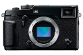
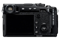

器材库 > APS及其以下画幅可换镜头数码相机 > X-Pro2

规格总览
产品类型
APS画幅可换镜头数码相机
发布日期
2016-01-15
影像规格
影像传感器
X-Trans CMOS III
影像传感器尺寸
23.6×15.6mm
有效像素
2430万
影像处理器
X Processor Pro
静态图像尺寸
L: (3:2) 6000 x 4000 / (16:9) 6000 x 3376 / (1:1) 4000 x 4000 M: (3:2) 4240 x 2832 / (16:9) 4240 x 2384 / (1:1) 2832 x 2832 S: (3:2) 3008 x 2000 / (16:9) 3008 x 1688 / (1:1) 2000 x 2000
静态图像格式
JPEG, RAW, RAW+JPEG
短片尺寸
Full HD 1920x1080 60p/50p/30p/25p/24p最长14分钟HD 1280x720 60p/50p/30p/25p/24p最长28分钟
短片格式
MPEG4-AVC/H.264
音频格式
线性PCM/立体声48KHz采样
除尘系统
超声波振动
镜头和对焦
镜头卡口
Fujifilm X
对焦系统类型
智能高速AF（TTL对比AF/TTL相位检测AF）
对焦点
77个
对焦模式
单幅AF/连续AF/MF
手动对焦
支持
曝光控制
测光系统
TTL256区测光
测光模式
中央重点测光, 点测光, 平均测光, 矩阵测光
曝光模式
P（程序AE）/A（光圈优先AE）/S（快门速度优先AE）/M（手动曝光）
胶片模拟模式
15种模式（PROVIA/标准、Velvia/高饱和度、ASTIA/柔和、经典正片、PRO Neg.Hi、PRO Neg.Std、黑白、黑白+黄色滤镜、黑白+红色滤镜、黑白+绿色滤镜、Sepia、ACROS、ACROS+黄色滤镜、ACROS+红色滤镜、ACROS+绿色滤镜）
创意滤镜
玩具相机/微缩景观/流行色彩/高调 /低调/动态色调/柔焦/局部色彩（红色/橙色/黄色/绿色/蓝色/紫色）
快门速度
机械4～1/8000秒（P）、30～1/8000秒B门：最高60分钟、T门：30～1/8000秒电子1～1/32000秒B门：固定1秒、T门：1～1/32000秒机械+电子4～1/32000秒（P）、30～1/32000秒B门：最高60分钟、T门：30～1/32000秒
闪光同步速度
1/250
曝光补偿
±5EV以1/3EV级调整
自动包围曝光
自动包围式曝光（±2EV/±5/3EV/±4/3EV/±1EV/±2/3EV/±1/3EV） 胶片模拟包围式曝光（可选任意三种胶片模拟） 动态范围包围式曝光（100%、200%、400%） ISO感光度包围式曝光（±1/3EV/±2/3EV/±1EV） 白平衡包围式曝光（±1/±2/±3）
ISO感光度
AUTO1/AUTO2/AUTO3（最高达ISO 12800）/ISO200至12800（1/3步长）（标准输出感光度） 扩展输出感光度：ISO100/25600/51200
白平衡
自动场景识别/ 自定义1至3/色温选择（2500K至10000K）/ 预设：晴天、阴天、荧光灯（日光）、荧光灯（暖白）、荧光灯（冷白）、白炽灯、潜水
自拍
10秒, 2秒
连拍
约8.0倍（JPEG：83幅，无损压缩RAW：33幅，非压缩RAW：27幅） 约3.0幅/秒（JPEG：无限制，无损压缩RAW：无限制，非压缩RAW：36幅）
取景器/显示屏
取景器
混合式取景器
LCD尺寸
3.0英寸
LCD像素
约162万
文件输入/输出
存储卡
SD/SDHC, SDXC
数据接口
微型USB
视频/音频接口
Micro HDMI 接口
支持打印协议
EXIF Print
电源
电池
NP-W126锂离子电池
续航能力
可拍摄照片约约250/350幅（EVF/OVF，安装XF35mmF1.4 R时）单部连续视频约110分钟（脸部优先设置为关闭）
机身规格
颜色
黑色
尺寸
140.5×82.8×45.9mm
重量
仅机身约445g / 包括电池和存储卡约495g
其它
配件端口
热靴, 快门线, 脚架螺丝孔, 麦克风输入端子
工作温度
-10~40℃
工作湿度
10~80%
附件
锂离子电池NP-W126，电池充电器BC-W126，肩背带，机身盖，金属带夹，保护盖，带夹安装工具，使用说明书
sxwuda2017-02-10 10:154.63 分
操作性 5.00功能性 5.00美观性 4.50趣味性 5.00耐用性 4.50性价比 3.50解像力 4.50色彩还原 5.00
AtianZ2016-10-18 15:194.69 分
操作性 4.50功能性 5.00美观性 5.00趣味性 5.00耐用性 5.00性价比 4.00解像力 4.50色彩还原 4.50
产品图 / 样片
X-Pro2

X-Pro2
评测 / 相关文章
- 详细内容 （存档）
- 可靠实用也闷骚 富士X-Pro2评测 （存档）
- ［资讯］富士X-T1&T2、X-Pro2全面大PK （存档）
- ［资讯］谁是长曝王 各家机型高ISO长曝控躁PK （存档）
- ［资讯］富士将为X-Pro2发布2.0版新固件 （存档）
- ［资讯］Markins发布富士X-Pro2专用L型快装板 （存档）
- ［行情］为X-T2让路？富士X-Pro2降价212美元 （存档）
- ［资讯］支持更多新品 SILKYPIX发布最新升级 （存档）
- ［试用］富士X-Pro2徕卡杀手？ （存档）
- ［资讯］要选就选最好的 旗舰级微单都有哪些？ （存档）
- ［试用］回归摄影真谛 我的口袋相机记录集 （存档）
- ［资讯］日本选出2016最佳相机与镜头 （存档）
相关文章
- ［资讯］EISA公布2016-2017年度器材奖项 （存档）
- ［试用］富士奥巴与松下谁是无反单色之王 （存档）
- ［资讯］富士X-T1&T2、X-Pro2全面大PK （存档）
- ［资讯］谁是长曝王 各家机型高ISO长曝控躁PK （存档）
- ［资讯］富士将为X-Pro2发布2.0版新固件 （存档）
- ［资讯］Markins发布富士X-Pro2专用L型快装板 （存档）
- ［行情］为X-T2让路？富士X-Pro2降价212美元 （存档）
- ［资讯］支持更多新品 SILKYPIX发布最新升级 （存档）
- ［试用］富士X-Pro2徕卡杀手？ （存档）
- ［资讯］要选就选最好的 旗舰级微单都有哪些？ （存档）
- ［资讯］富士携新产品闪耀2016P&E （原站已下线）
- ［资讯］FUJIFILM X系列三款产品获2016 TIPA大奖 （原站已下线）
- ［资讯］改善长曝处理噪点 富士发布X-PRO2固件升级 （原站已下线）
- ［试用］富士X-Pro2实拍样片 （原站已下线）
- ［试用］可靠实用也闷骚 富士X-Pro2评测 （存档）
- ［资讯］富士X-Pro2无反相机官方样片欣赏 （原站已下线）
- ［资讯］领略图片品质新高度 富士推出X-Pro2 （存档）
- ［试用］回归摄影真谛 我的口袋相机记录集 （存档）
- ［资讯］日本选出2016最佳相机与镜头 （存档）
- ［试用］夏日泳装少女 富士X-Pro2 XF 56/1.2R试镜 （原站已下线）
- ［资讯］富士即将发布多款X系列相机固件更新 （存档）
- ［资讯］富士更新X-E3和X-Pro2新固件 （原站已下线）
- ［资讯］富士X-Pro2等固件更新发布 （原站已下线）
- ［试用］X-Trans旅行画卷 澳大利亚西南角 （原站已下线）
- ［试用］色彩之魅 带着富士X-Pro2街拍京都 （原站已下线）
- ［资讯］富士推出X-T2碳晶灰和X-Pro2石墨灰 （原站已下线）
- ［资讯］Imaging Resource评选本年最牛相机 （存档）
- ［资讯］点我下载 富士发布X-Pro2和X-T1新固件 （原站已下线）
- ［资讯］看看富士用户最常用的镜头 （原站已下线）